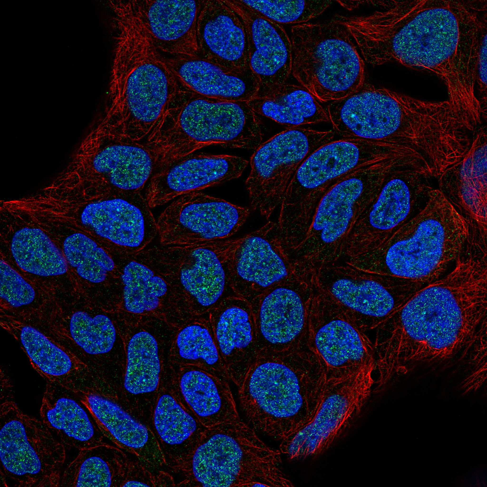
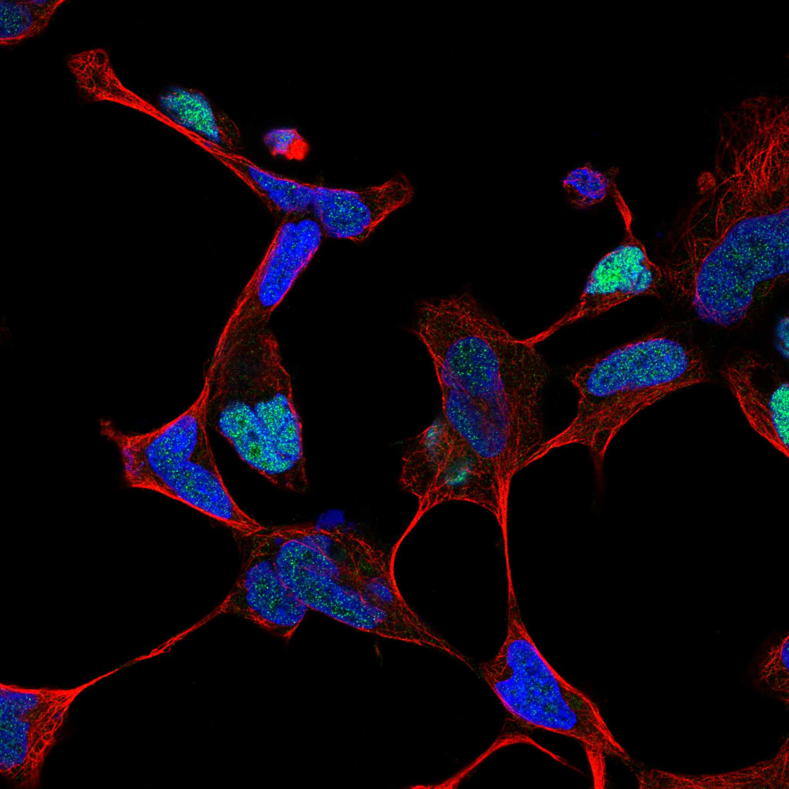

type: protein-evaluation gene: "GUCY1A1" date: 2026-06-02 tags: [protein-scout, nuclear-speckle, evaluation] status: scored pm: 18 ---
GUCY1A1 核蛋白评估报告
1. 基本信息
| 项目 | 内容 |
|---|---|
| 基因名 / 别名 | GUCY1A1 / GUC1A3, GUCSA3, GUCY1A3 |
| 蛋白全称 | Guanylate cyclase soluble subunit alpha-1 |
| 蛋白大小 | 690 aa / 77.5 kDa |
| UniProt ID | Q02108 |
| AlphaFold | AF-Q02108-F1 (v6) |
2. 评分总览
| 维度 | 得分 | 满分 | 加权后 | 关键证据摘要 |
|---|---|---|---|---|
| 核定位特异性 | 5/10 | ×4 | 20 | HPA: Nucleoplasm (Supported); UniProt: Cytoplasm (ECO:0000305); GO: cytosol TAS + guanylate cyclase complex IDA; Uniprot/HPA 定位矛盾 |
| 蛋白大小 | 8/10 | ×1 | 8 | 690 aa (600-800 范围) |
| 研究新颖性 | 10/10 | ×5 | 50 | PubMed strict=18，≤20 档，极高新颖性 |
| 三维结构 | 8/10 | ×3 | 24 | 12 PDB 结构 (2 X-ray + 10 EM, 1.9-4.1A); AF mean pLDDT 77.4 |
| 调控结构域 | 4/10 | ×2 | 8 | Guanylate cyclase 催化结构域 (PF00211, PF07701)，非染色质调控 |
| PPI 网络 | 6/10 | ×3 | 18 | STRING 15 + IntAct 15; GUCY1B1 异源二聚体核心; NO-cGMP 信号通路 |
| 互证加分 | -- | -- | +0 | 无显著互证 |
| 加权总分 | 128/180 | |||
| 归一化总分 | 69.9/100 |
3. 详细分析
3.1 核定位证据
| 来源 | 定位 | 可信度 |
|---|---|---|
| UniProt | Cytoplasm (ECO:0000305) | 预测级 |
| GO-CC | cytosol (GO:0005829, TAS:Reactome); guanylate cyclase complex, soluble (GO:0008074, IDA) | 实验/预测 |
| HPA IF | Supported reliability; Nucleoplasm (main) | 中等可信度 |
HPA IF 状态: Supported 级别，HPA 显示 Nucleoplasm 定位，但 UniProt 仅标注 Cytoplasm (ECO:0000305 预测级)。定位存在 UniProt/HPA 间的矛盾：传统认知为胞浆可溶性鸟苷酸环化酶，但 HPA IF 证据提示核质定位。
结论: HPA 提示核定位，但与 UniProt 胞浆注释矛盾。需进一步验证。
3.2 蛋白大小评估
评价: 690 aa (77.5 kDa)，处于中等偏大范围 (600-800)。
3.3 研究现状
| 指标 | 数值 |
|---|---|
| PubMed strict (Title/Abstract+gene/protein) | 18 |
| PubMed symbol_only | 24 |
| PubMed broad | 43 |
关键文献: 1. Yin M et al. (2025). "GUCY1A1-LDHA Axis Suppresses Ferroptosis in Cardiac Ischemia-Reperfusion Injury." *Circ Res*. PMID: 40856046 2. Meguro S et al. (2024). "Preexisting senescent fibroblasts in the aged bladder create a tumor-permissive niche." *Nat Aging*. PMID: 39251867 3. Malinowski D et al. (2022). "SELL and GUCY1A1 Gene Polymorphisms in Patients with Unstable Angina." *Biomedicines*. PMID: 36289756 4. Vishnolia KK et al. (2021). "sGC Activity and Regulation of Blood Flow in a Zebrafish Model System." *Front Physiol*. PMID: 33716783 5. Ren Z et al. (2024). "Polymorphisms of HRG, FETUB, and GUCY1A1 genes and association with litter size in sheep." *Arch Anim Breed*. PMID: 42088546
评价: PubMed strict=18，极高新颖性，研究主要集中于心血管功能和 SNP 关联。
3.4 三维结构分析
| 指标 | 数值 |
|---|---|
| UniProt 长度 | 690 aa |
| PDB 条数 | 12 (2 X-ray + 10 EM, 1.90-4.10 A) |
| AlphaFold mean pLDDT | 77.4 |
| pLDDT >90 | 36.1% |
| pLDDT 70-90 | 38.8% |
| pLDDT 50-70 | 9.1% |
| pLDDT <50 | 15.9% |
PAE 图:
评价: 12 个 PDB 结构，含 X-ray 晶体 (1.9-2.1A) 和冷冻电镜结构。结构研究充分，催化结构域有高分辨结构。
3.5 结构域分析
| 来源 | 结构域 |
|---|---|
| InterPro | IPR001054 (Adenylyl cyclase), IPR018297, IPR038158, IPR011645 (H-NOX), IPR042463, IPR024096, IPR029787 |
| Pfam | PF00211 (Guanylate cyclase), PF07701 (H-NOX domain) |
染色质调控潜力分析: 可溶性鸟苷酸环化酶催化结构域，H-NOX 结构域结合血红素/NO。非经典染色质调控结构域。cGMP 第二信使合成酶，通过 NO-cGMP-PKG 信号通路间接调控下游转录因子。
3.6 PPI 网络
实验验证互作 (IntAct, physical association):
| Partner | 方法 | PMID | 功能类别 | 调控相关？ |
|---|---|---|---|---|
| GUCY1B1 | anti tag coIP | 28514442 | sGC beta subunit | No |
| MAPK8 | two hybrid array | 21988832 | MAP kinase | Yes |
| IKBKG | two hybrid array | 21988832 | NF-kB regulator | Yes |
| SART1 | cross-linking | 30021884 | Splicing factor | Partial |
| HMOX1 | anti tag coIP | 33961781 | Heme oxygenase | Partial |
| ANKMY2 | anti tag coIP | 28514442 | Ankyrin repeat | No |
STRING 预测互作 (combined score >0.8):
| Partner | Score | 实验分 | 功能类别 | 调控相关？ |
|---|---|---|---|---|
| GUCY1B1 | 0.999 | 0.992 | sGC heterodimer | No |
| GUCY1A2 | 0.967 | 0 | sGC alpha2 chain | No |
| PRKG1 | 0.948 | 0.164 | cGMP-dependent kinase | Yes |
| PRKG2 | 0.946 | 0.164 | cGMP-dependent kinase | Yes |
| NOS1 | 0.915 | 0 | NO synthesis | Yes |
| PDE5A | 0.850 | 0.126 | cGMP phosphodiesterase | Yes |
评价: STRING 15 + IntAct 15。核心与 GUCY1B1 形成异源二聚体 sGC, NO-cGMP 信号通路蛋白网络完整。与 IKBKG/NF-kB 通路和 MAPK8 有实验互作。
3.7 多库互证
| 维度 | 来源 | 结果 | 是否一致 |
|---|---|---|---|
| 三维结构 | AlphaFold + PDB | 12 PDB | 有实验结构 |
| 结构域 | UniProt/InterPro/Pfam | Guanylate cyclase + H-NOX | 多库一致 |
| PPI 网络 | STRING + IntAct | sGC/NO-cGMP 通路核心 | 多源互证 |
| 核定位 | HPA/UniProt/GO | HPA Nucleoplasm vs UniProt Cytoplasm | 矛盾 |
互证加分明细: 无显著额外互证加分（定位存在矛盾）。 总计: +0
4. 总体评价
推荐等级: ***oo (3/5)
核心优势: 1. 极高新颖性 (PubMed strict=18) 2. 12 个 PDB 结构，结构研究充分 3. 晶体结构分辨率高 (1.9A)，适合分子对接 4. NO-cGMP-PKG 信号通路完整，与 NF-kB 有实验互作
风险/不确定性: 1. 核定位存在 UniProt/HPA 矛盾，胞浆定位是传统认知 2. 酶催化功能为主，非经典转录调控因子 3. 可能与 TE 调控无直接关联
下一步建议:
- [ ] IF 实验独立验证核定位
- [ ] 研究 cGMP 信号是否影响 TE 表达
- [ ] 探索 sGC 在核内可能的新功能
5. 数据来源
- GeneCards: https://www.genecards.org/cgi-bin/carddisp.pl?gene=GUCY1A1
- Protein Atlas: https://www.proteinatlas.org/ENSG00000164116-GUCY1A1
- PubMed: https://pubmed.ncbi.nlm.nih.gov/?term=%22GUCY1A1%22%5BTitle/Abstract%5D
- UniProt: https://www.uniprot.org/uniprot/Q02108
- STRING: https://string-db.org/network/9606.ENSG00000164116
- AlphaFold: https://alphafold.ebi.ac.uk/entry/Q02108


PPI 网络
| Partner | Source | Score/Evidence |
|---|---|---|
| GUCY1B1 | STRING | 0.999 |
| GUCY1A2 | STRING | 0.967 |
| PRKG1 | STRING | 0.948 |
| PRKG2 | STRING | 0.946 |
| NOS1 | STRING | 0.915 |
| MAPK8 | IntAct | psi-mi:"MI:0397"(two hybrid ar |
| IKBKG | IntAct | psi-mi:"MI:0397"(two hybrid ar |
| SART1 | IntAct | psi-mi:"MI:0030"(cross-linking |
HPA IF 图像已本地嵌入。
PAE 图像说明: AlphaFold PAE 图像已重新获取并嵌入（见下方 PAE 图像修正块）；结构判断仍结合 pLDDT 与 PAE 综合判断。
<!-- AF_PAE_REPAIR_START --> PAE 图像修正（2026-06-05）: AlphaFold 提供 predicted aligned error 图像；此前“PAE 图像暂无数据”的表述为未获取/未嵌入导致。